Karya terbaik sineas tanah air lengkap dengan sinopsis dan deretan pemeran utama.
Koleksi film pendek terbaik yang bisa langsung ditonton dari YouTube.
Serial pilihan terbaik dengan episode lengkap kualitas tinggi.
Sinopsis film...
Sutradara: -
Pemeran: -
Film dan serial yang Anda simpan untuk ditonton nanti.
Deskripsi film...
Pemeran Utama: -
Kualitas Pemutaran Default
Pilih resolusi otomatis untuk video streaming.
Autoplay Episode Berikutnya
Putar otomatis saat tayangan berakhir.